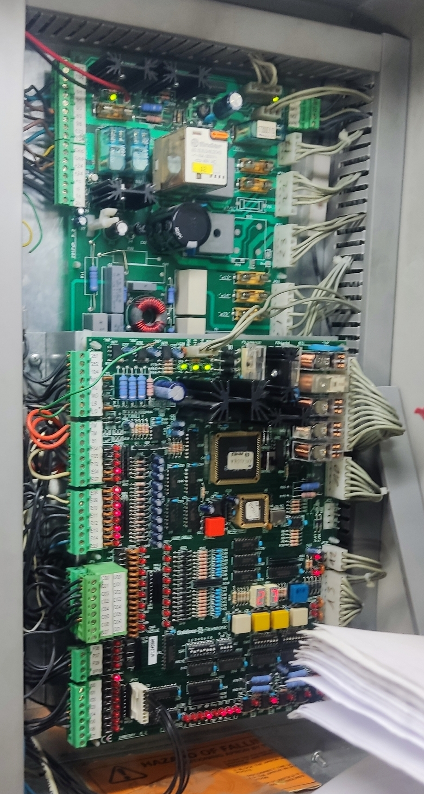

• Alimentação Primária: A linha nasce no conector JP23.1 da placa de manobra, passa pela proteção do disjuntor INT2 e acede à régua geral X2 pelo borne 13.
• Diagnóstico Visual: Se a linha de segurança abrir em qualquer ponto da série, o LED 11 (VA Open) apaga imediatamente na CPU.
• Bloqueio de Curso (Overtravel): Atuações de fim de curso (13C a 13D) exigem pressionar o botão RESTORE por 2 segundos na placa após a resolução mecânica.
Meça com o multímetro em escala Vdc referenciado ao 0Vdc da fonte.
| Bornes (Série) | Componentes / Circuitos Atendidos | Estado OK |
|---|---|---|
|
13 ➔ 13C
|
Poço Botão de STOP do poço. |
48V DC |
|
13C ➔ 13D
|
Limites Contactos de fim de curso e switch mecânico do paraquedas. |
48V DC |
|
13D ➔ 15
|
Revisão STOP de revisão, seletor de revisão em modo NORMAL e contacto do avental recolhido. |
48V DC |
|
15 ➔ 15/1
|
Portas Série de fecho das portas manuais de patamar (presença de folha). |
48V DC |
|
15/1 ➔ 17
|
Cabina Contacto elétrico de encravamento da porta de cabine. |
48V DC |
|
17 ➔ 18
|
Trincos Contactos de encravamento mecânico das portas de piso (série de trincos). |
48V DC |
💡 Análise Rápida de Bloqueio de Marcha:
• Se houver 48V no borne 17 mas 0V no borne 18, a falha reside estritamente na linha de trincos mecânicos das portas de piso (patim retrátil ou contacto desafinado).Consulte o código ativo no display de 2 dígitos da placa CPU.
| Cód. | Descrição do Estado | Entradas / Sinais Associados |
|---|---|---|
| 01 | Abrandamento | Contactos de zona (E10 / E11) |
| 02 | Abrandamento por Extremo Piso superior ou inferior |
Contactos de zona (E10 / E11) e contactos de piso extremo (E12 / E13) |
| 08 | Extremo superior e inferior simultâneos | Contactos de piso extremo (E12 / E13) |
| 12 | Em movimento / Marcha ativa | Contactos de movimento (E02 / E03) |
| 2b | Estacionado com portas abertas | Contacto de porta/caixa (17 / 18) |
| 4E | Estacionado em zona com portas fechadas | Contactos de porta (17) e contactos de zona (E10 / E11) |
| 4F | Fora da zona de estacionamento | Contactos de zona (E10 / E11) |
| 03 | Contacto de porta/caixa fora de zona | Contacto de porta/caixa (17 / 18) — Escoras do poço |
| 15 | Temporizador de arranque expirou | Contactos 17/18 parado ou E02/E03 em marcha |
| 21 | Portas abertas | Chamada de cabine, contactos de porta/caixa (17 / 18) |
| 23 | Contacto de porta/caixa acionado | Contacto de porta/caixa (17 / 18) — Escoras do poço |
| 24 | Barreira fotocélula interrompida | Fotocélulas (E14) — Entrada E23 ativa |
| 27 | Bordo de segurança / Sobrecarga / Chamada | Bordo (E07) — Sobrecarga (E09) — Chamada piso — Chassi cabine (16) — Entrada E23 ativa |
| 49 | Falha ao arrancar | Contacto de porta/caixa (17 / 18) |
| A1 | Emergência ativa | 24VDC/48VDC PFR (24VDC/48VDC no borne 12) |
| A3 | Cabine fora da zona de desengate com portas abertas (AM, A3) |
Entrada E23, contactos renivelamento (261, 262), fim de curso 11 (cadeia seg.) * Requer botão RESTORE |
| A4 | Manobra de Bombeiros ativa | Entrada de serviço de bombeiros (E08) |
| A6 | Retorno ao piso de bombeiros | Entrada de serviço de bombeiros (E08) |
| A7 | Termistores acionados (Sonda RTT/E04) | Alarme temp. óleo (E04), alarme temp. motor RTT (TM-tm) * Requer botão RESTORE |
| AA | RESET: Inicialização ou fora de zona | Reset inicial — Contactos de zona (E10/E11) — Extremos (E12/E13) |
| F1 | Circuitos de segurança abertos | Interruptor VA — Manutenção (14) |
| F2 | Fim de curso (Overtravel) ou Erro Renivelamento | Falha de renivelamento (264), fim de curso 11 (cadeia seg.) * Requer botão RESTORE |
| F5 | Tempo máximo de viagem expirou | Zonas (E10/E11) — Pisos extremos (E12/E13) (SW1 bit 3) * Requer botão RESTORE |
| F9 | Nº máximo de tentativas de arranque atingido | Contactos de movimento (E02 / E03) ** Requer botão RESET |
🔄 Procedimento de RESTORE (*) : Pressione o botão RESTORE na placa durante 2 segundos.
♺ Procedimento de RESET (**) : Pressione o botão RESET na placa.